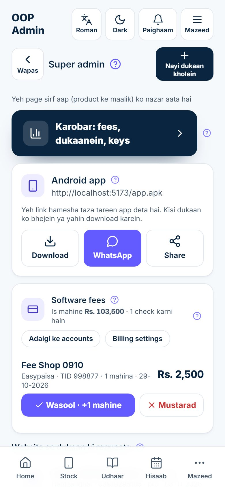
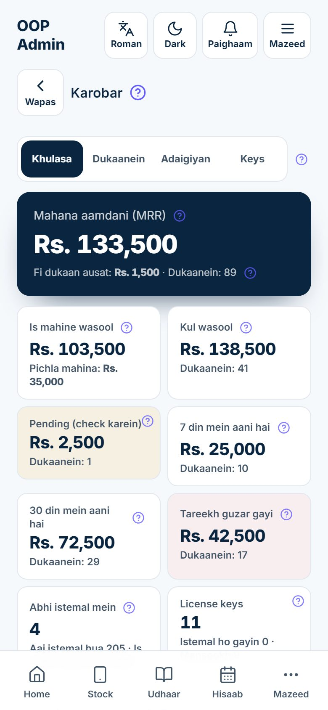
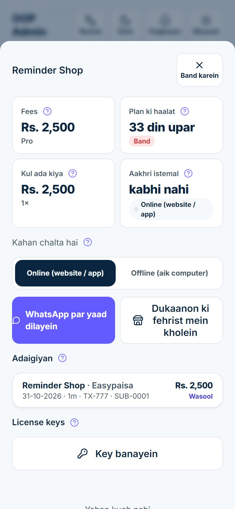
Mobile Shop dukaanon ko service ke taur par bechi jati hai. Har dukaan ka apna alag stock, khata, bill aur staff hota hai. OOP Solutions mein jo banda in sab dukaanon ke upar karobar ka kaam chalata hai, woh super admin hai. Aap ka kaam hai:
Yeh sab usi app ke andar hota hai jo dukaanein istemal karti hain. Jab aap super admin number se login karte hain to kuch extra screens nazar aati hain jo kisi dukaandar ko nazar nahi aatin.
| Lafz | Matlab |
|---|---|
| Plan (package) | trial, basic, pro ya chain; yeh tay karta hai ke dukaan ko app ke kaun se hisse milte hain |
| Adaigi is tareekh tak (Paid until) | Woh aakhri din jis tak dukaan ki fees cover karti hai |
| Riayati din (Grace days) | "Adaigi is tareekh tak" ke baad ke din jin mein dukaan poori chalti hai, surkh yaad dehani ke sath |
| Band (Locked) | Riayati din khatam: dukaan sirf data dekh sakti hai, adaigi kar sakti hai aur backup le sakti hai |
| Renewal code / license key | Dastkhat shuda code jo aik dukaan ke plan mein mahine jorta hai; internet ke baghair, sirf aik baar chalta hai |
| Magic link | Web link jo dukaandar ko 7 din tak key dikhata hai, login ke baghair |
| Aik computer wala install | App ka Windows version jo dukaan ke aik computer par chalta hai, aap ke server ke baghair |
Koi banda sirf is liye super admin hai ke us ka mobile number server ki super-admin numbers wali list mein hai. App mein is ka koi button nahi, is liye koi dukaan ka maalik ya staff khud ko yeh taqat nahi de sakta. Number list mein aa jaye to woh banda bas usi number se login karta hai.
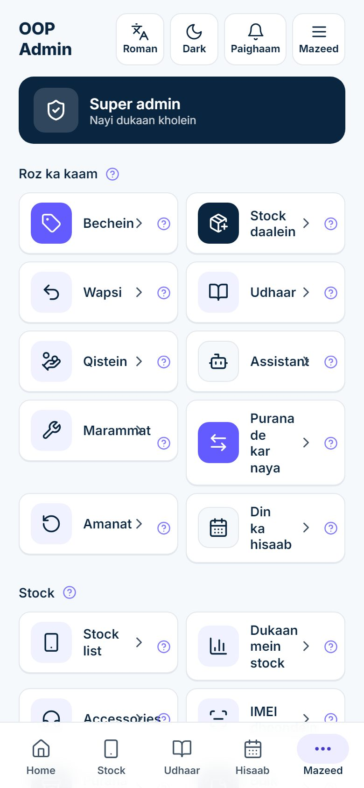
Super admin page khul jata hai. Title ke neeche aik line likhi hai Yeh page sirf aap (product ke maalik) ko nazar aata hai. Dukaandar aur un ka staff yeh banner ya yeh page kabhi nahi dekhte.
Upar se neeche tak page mein yeh hai:
| Hissa | Kis kaam ka hai |
|---|---|
| Nayi dukaan kholein (upar daayein) | Naye customer ki dukaan kholta hai (chapter 3) |
| Karobar: fees, dukaanein, keys | Karobar console kholta hai (chapter 7) |
| Android app card | App download ka link jo dukaanon ko bhejna hai (chapter 9) |
| Software fees card | Is mahine ki fees aur kitni adaigiyan intezar mein hain, Adaigi ke accounts aur Billing settings ke buttons apni alag line mein, phir har adaigi jo check karni hai (chapter 4 aur 5) |
| Website se dukaan ki requests | Jin logon ne website par dukaan maangi (sirf tab nazar aata hai jab koi ho) |
| Password ki requests | Dukaan ke log jinhon ne "Password bhool gaye?" dabaya (sirf tab nazar aata hai jab koi ho) |
| Search, Sab · Fees baqi · Band aur Customers ki dukaanein | Har dukaan, us ke plan, baqi din aur fees ke sath; kisi ko daba kar usay manage karein |
Har heading ke sath aik chhota ? hai: daba kar misaal ke sath chhoti si wazahat parhein.
Dukaanein khud sign up nahi kar saktin; har dukaan aap kholte hain. Shuru karne se pehle dukaandar se package aur qeemat tay kar lein (chapter 4) aur us se dukaan ka naam, shehar, us ka naam, us ka mobile number (yahi us ka login banta hai) aur woh zubaan poochein jo us ka staff sab se achhi parhta hai.
Misaal: Bilal Ahmed Hall Road, Lahore par Star Mobiles chalata hai. Us ka number 0321 5550002 hai.
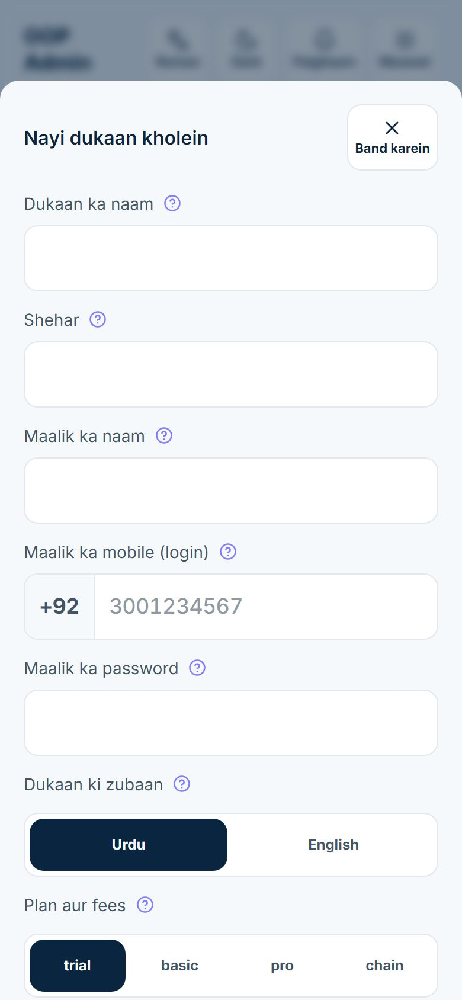
Ab sheet par Dukaan khul gayi likha aata hai aur Yeh login tafseel dukaan ke maalik ko dein nazar aata hai: mobile number aur password, bare numbers mein.
Website par Meri dukaan kholein form hai: naam, dukaan ka naam, shehar, mobile number, plan (Muft trial, basic, pro ya chain) aur aik optional note. Jab koi visitor Request bhejein dabata hai to aap ko WhatsApp paighaam aata hai aur request Super admin page par Website se dukaan ki requests ke neeche nazar aati hai.
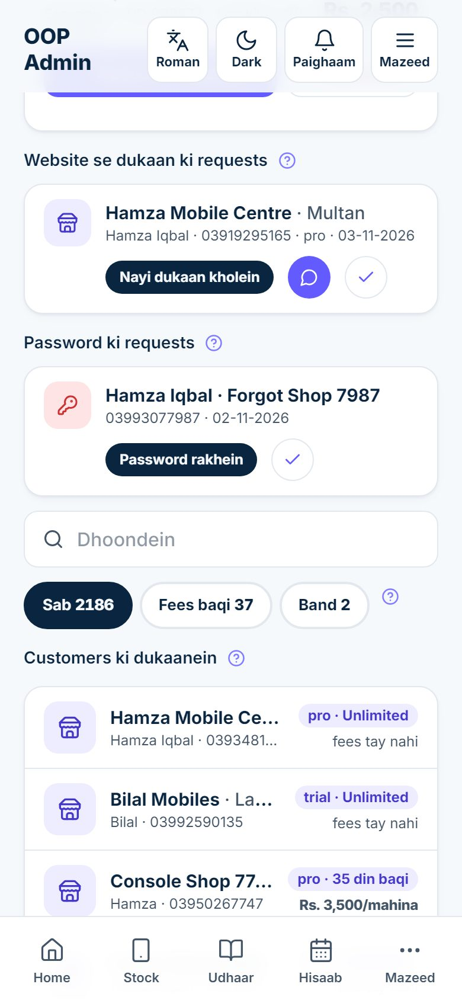
Har request mein poora dukaan ka naam aur shehar hota hai, phir banday ka naam, us ka number, us ka chuna hua plan aur tareekh. Us ke neeche wali line mein teen buttons hain:
| Button | Kya karta hai |
|---|---|
| Nayi dukaan kholein | Nayi dukaan ka form kholta hai jis mein us ki dukaan ka naam, shehar, naam, number aur chuna hua plan pehle se bhara hota hai, sath tayyar password bhi. Check karein, phir Nayi dukaan kholein dabayein. Request khud band ho jati hai. |
| Hara WhatsApp gol button | Us ke sath WhatsApp chat kholta hai, taake pehle qeemat ki baat ya koi sawal kar sakein |
| Tick | Dukaan khole baghair request ko mukammal mark karta hai (maslan dobara aayi request, ya kisi ne iraada badal liya) |
Misaal: Saddar, Karachi se Usman basic maangta hai. WhatsApp gol button dabayein, Rs. 1,500 mahana tay karein, phir Nayi dukaan kholein dabayein, us ki bhari hui tafseel check karein, button dabayein aur WhatsApp par bhejein.
Requests ke neeche aik search box, teen filter buttons aur Customers ki dukaanein hain.
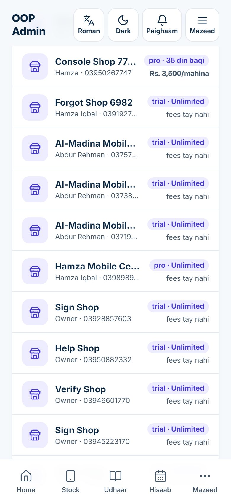
Har line mein dukaan aur shehar, maalik aur us ka number, plan aur baqi waqt ki chip (maslan "basic · 12 din baqi", "pro · 3 din pehle khatam", "trial · Unlimited" ya "Band"), aur mahana fees ya "fees tay nahi" hoti hai. Filter buttons:
| Button | Kya dikhata hai |
|---|---|
| Sab | Har dukaan, kul ginti ke sath |
| Fees baqi | Woh dukaanein jin ka plan 7 din ya kam mein khatam hota hai, ya khatam ho chuka hai magar abhi riayati dinon mein hai |
| Band | Woh dukaanein jin ke riayati din khatam ho gaye |
Search box naam se dukaan dhoondta hai. Kisi dukaan ko daba kar us ki sheet kholein: plan, adaigiyan, renewal code, password aur branches, jin ki wazahat agle chapters mein hai.
Jab koi maalik doosri dukaan kholta hai to us ke liye nayi dukaan na kholein. Branch shamil karein, taake woh usi login se chalaye aur aik hi fees de.
Ab woh usi login se Mazeed → Meri dukaanein mein apni dukaanon ke darmiyan badal sakta hai. Har dukaan ka apna stock, khata aur bill rehta hai, jab ke package aur fees aik hi rehti hai.
Har dukaan aik package par hoti hai. Package tay karta hai ke dukaan app ke kaun se hisse istemal kar sakti hai. Buniyadi cheezein har package mein hamesha on hain: stock, sale, kharidari, wapsi, udhaar khata, adaigiyan, bill, ID check, din ka hisaab, settings aur staff.
| Package | Kis ke liye | Kaun se extra hisse on karta hai |
|---|---|---|
| trial | Nayi dukaan jo app aazma rahi hai | Sab kuch |
| basic | Chhoti dukaan | Accessories aur watches, kharche aur din band karna, sale hold karna, bill par tax |
| pro | Masroof dukaan | Basic ka sab kuch, plus repair, exchange, munafa aur reports, download aur share (PDF / Excel), WhatsApp paighaam aur yaad dehani, qist, staff ki hazri, assistant aur photo se parhna |
| chain | Kayi dukaanon wala maalik | Sab kuch, doosri dukaanon ko amanat samet |
Website yeh list qeematein dikhati hai. Yeh mahana hain, rupay mein. Aik saal ikatha dene par 10 mahine ki qeemat mein 12 mahine milte hain, yaani dukaan ko 2 mahine muft.
| Package | Mahana | Saalana (10 ki qeemat mein 12 mahine) |
|---|---|---|
| Muft trial | Rs. 0, 14 din ke liye | — |
| basic | Rs. 1,500 | Rs. 15,000 |
| pro | Rs. 3,000 | Rs. 30,000 |
| chain | Rs. 6,000 | Rs. 60,000 |
Customers ki dukaanein mein koi dukaan dabayein. Us ki sheet maalik, users ki ginti, plan chip aur Khatam tareekh ke sath khulti hai. Plan aur fees tak scroll karein.
Fees ke khanon ke neeche teen jaldi wale buttons hain: +1 mahina, +3 mahine aur +12 mahine. Har aik plan mein mahine jor kar foran save karta hai. Mahine Adaigi is tareekh tak se jurte hain agar woh tareekh abhi aage hai, warna aaj se, is liye jaldi adaigi karne wali dukaan ka koi din zaya nahi hota.
Misaal: Star Mobiles ki adaigi 20 November tak hai. Aaj 10 November hai aur Bilal 3 mahine aur maangta hai. +3 mahine dabayein: adaigi 20 February tak ho jati hai.
Unlimited button yahi kaam jaan boojh kar karta hai: aakhri tareekh hata deta hai. Isay apni demo dukaan, kisi dost ki dukaan ya umar bhar ke deal ke liye istemal karein.
14 din ka trial. Hamza Mobile Centre, Multan ke Hamza Iqbal muft trial chahte hain. Un ki dukaan trial par kholein, phir un ki sheet mein Adaigi is tareekh tak aaj se 14 din aage rakhein, fees khali chhorein aur Plan save karein dabayein. Jab woh basic chunein to basic dabayein, Mahana fees (Rs) mein 1500 likhein, Plan save karein, aur un ki pehli adaigi lein (chapter 5).
Poora saal ikatha. Ali Mobiles aik saal ke liye pro leti hai aur Rs. 30,000 deti hai. pro dabayein, Mahana fees (Rs) mein 3000 likhein aur Plan save karein; yahan mahana raqam hi rakhein, kyunke karobar console mahana aamdani ke liye isi ko istemal karta hai. Phir Adaigi darj karein raqam 30000 aur mahine 12 ke sath.
Customers ki dukaanein aur dukaan ki sheet mein plan chip jab tak plan chal raha ho (ya koi aakhri tareekh na ho) violet hoti hai, 7 din ya kam reh jayein to amber (narangi peeli), aur plan khatam ya dukaan band ho jaye to surkh.
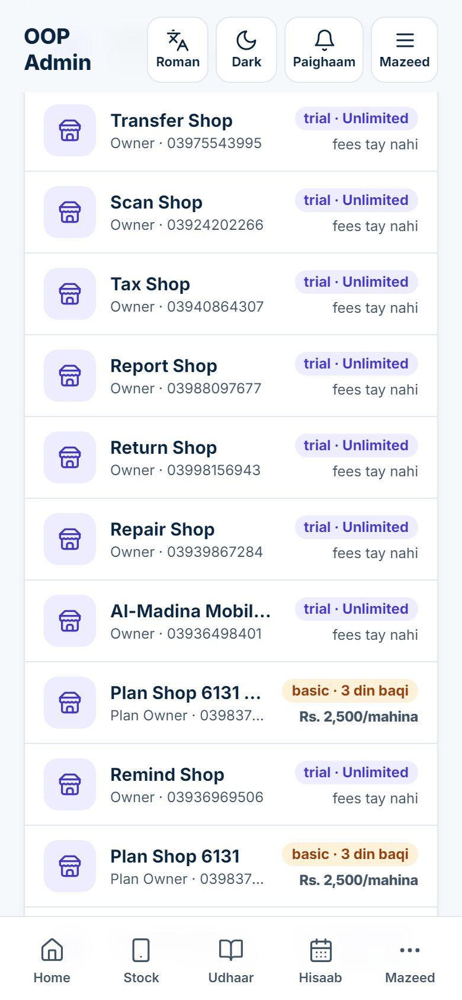
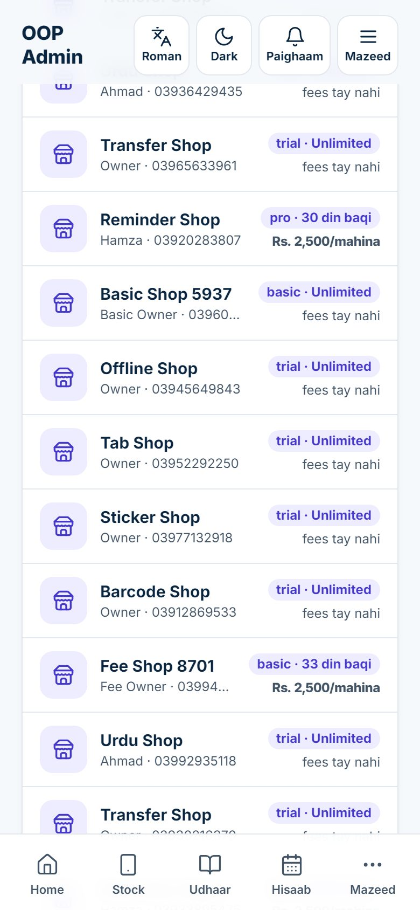
Kisi dukaan ko oonche package ka sirf aik hissa chahiye ho sakta hai. Jab tak Is dukaan ke modules ke neeche Plan ke mutabiq par tick hai, dukaan ko us ke package ke hisse milte hain, aur package badalne par khud badal jate hain. Tick hata dein to sirf woh hisse on hote hain jin par aap tick karein, package jo bhi ho; wapas jaane ke liye dobara tick karein.
Misaal: Rs. 1,500 wali basic dukaan Rs. 2,000 mahana mein repair bhi chahti hai. Plan ke mutabiq (basic) se tick hatayein, Marammat par tick lagayein, Modules save karein dabayein, phir Mahana fees (Rs) 2000 karein aur Plan save karein dabayein.
Yeh settings sab dukaanon ke liye aik sath hain. Super admin page par, Software fees card mein, Billing settings dabayein (card ke title ke neeche buttons wali line mein). Agar button surkh hai to aap ki asli tafseel abhi nahi bhari gayi.
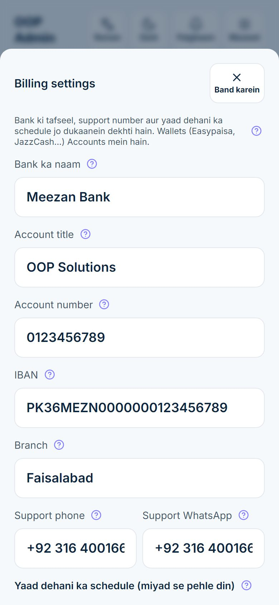
Aik baar bharein:
Jab tak bank wali lines mein "PLACEHOLDER" likha hai, sheet khabardar karti hai Abhi sample tafseel lagi hai — apni asli tafseel bharein. aur dukaanon ko bank wala hissa bilkul nazar nahi aata.
Phir Yaad dehani ka schedule (miyad se pehle din):
| Khana | Default | Kya karta hai |
|---|---|---|
| Peeli patti kab se | 7 | Aakhri tareekh se kitne din pehle dukaan ki screens par chhoti peeli patti aati hai. Abhi popup nahi. |
| Orange patti + popup kab se | 3 | Patti orange ho jati hai aur yaad dehani ka popup din mein aik baar aata hai |
| Surkh patti + popup kab se | 1 | Patti surkh ho jati hai; snooze ghanton ke baad popup wapas aata hai |
| Miyad ke baad riayati din | 7 | Aakhri tareekh ke baad ke din jin mein dukaan poori chalti hai, surkh patti aur popup ke sath. Un ke baad dukaan band ho jati hai. |
| Snooze ghante | 4 | Jab maalik surkh popup par "Baad mein yaad dilayen" dabata hai to itne ghante popup nahi aata |
Mehfooz karein dabayein. Tabdeeli har dukaan par aik sath lagti hai; app update karne ki zaroorat nahi.
Default ke sath misaal: plan 30 November ko khatam hota hai. Peeli patti 23 November se, orange patti aur rozana popup 27 November se, 29 aur 30 November ko surkh. Dukaan apne 7 riayati din 7 December tak chalti hai aur 8 December se band ho jati hai.
Easypaisa, JazzCash, SadaPay aur doosre wallets alag list mein jate hain. Software fees card mein Adaigi ke accounts dabayein.
Har dukaan yeh accounts apni Software fees screen par In mein se kisi account mein bhejein ke neeche dekhti hai, har aik ke sath Copy button; website par bhi yeh nazar aate hain.
Bharosemand customer ko baqiyon se zyada riayati din mil sakte hain. Us ki sheet mein Is dukaan ke riayati din (khali = default): koi number likhein, maslan 15, aur Mehfooz karein dabayein. Billing settings wala number istemal karne ke liye khali chhor dein.
Misaal: default 7 hai. Jis dealer ne do saal waqt par adaigi ki usay 15 milte hain: woh apni aakhri tareekh ke 15 din baad hi band hota hai.
Dukaan ka plan teen tareeqon se renew ho sakta hai. Jis tareeqe se paisa aap tak pohncha, wahi istemal karein.
| Paisa kaise aaya | Aap kya karein | Kahan |
|---|---|---|
| Dukaan ne aap ke wallet ya bank mein bheja aur app mein bataya | Screenshot check karein, Wasool dabayein | Software fees card (yahi chapter) |
| Aap ko cash mila ya aap ne transfer khud dekha | Adaigi darj karein | Dukaan ki sheet (yahi chapter) |
| Aik computer wali dukaan jahan internet nahi | Raqam darj karein, phir renewal code bhejein | Chapter 6 |
Dukaan ka maalik Mazeed → Software fees kholta hai (ya yaad dehani ki patti dabata hai), In mein se kisi account mein bhejein ke neeche se aap ka koi account number copy karta hai aur apni app se paisa bhejta hai. Phir Main ne ada kar di ke neeche Raqam (Rs), Mahine, Kis se bheji, Transaction ID / hawala, Adaigi ki tareekh bharta hai, screenshot lagata hai aur Bhejein dabata hai. Us ki yaad dehani ki patti halki neeli ho jati hai ("verification pending"), popup ruk jata hai, aur adaigi Check ho rahi hai dikhati hai. Aap ko WhatsApp paighaam aata hai.
Super admin page par Software fees card mein aik line hoti hai jaise "Is mahine Rs. 100,000 · 1 check karni hain", Adaigi ke accounts aur Billing settings ke buttons, aur un ke neeche har woh adaigi jo aap ka intezar kar rahi hai. Har aik mein dukaan ka naam, adaigi ka zariya, transaction ID, mahine, tareekh aur raqam hoti hai (chapter 2 mein page ke upar aik nazar aati hai).
Line foran ghayab ho jati hai. Dukaan ki Adaigi is tareekh tak us ke bataye hue mahinon jitni aage chali jati hai (agar us ki maujooda aakhri tareekh abhi aage hai to wahan se, warna aaj se), adaigi ko raseed number milta hai (SUB-0001, SUB-0002 waghera, aap ki sab dukaanon mein aik hi silsila), aur maalik ko WhatsApp paighaam aur app mein aik baar "Shukriya, renew ho gaya …" milta hai. Woh Aap ki adaigiyan se raseed print kar sakta hai.
Misaal: Ali Mobiles basic ke 3 mahine ke liye Easypaisa par Rs. 4,500 bhejti hai. Aap apne Easypaisa mein usi ID ke sath Rs. 4,500 dekhte hain, Wasool · +3 mahine dabate hain, aur us ka plan 3 mahine aur chalta hai.
Agar paisa aap ke account mein nahi, ya raqam ghalat hai, to Mustarad dabayein. Aik box poochta hai Kyun nahi? (dukaandar ye parhe ga); saaf wajah likhein, maslan "Hamare Easypaisa mein ID 0123 ke sath Rs. 1,500 nahi aaye. Check kar ke dobara bhejein." Maalik ko adaigi Qabool nahi hui aap ki wajah ke sath nazar aati hai aur woh dobara bata sakta hai. Us ka plan nahi badalta. Wajah khali ho to kuch mustarad nahi hota.
Jab Bilal aap ko Rs. 4,500 cash deta hai, ya aap us ka bank transfer dekhte hain magar app mein koi report nahi:
Aik hari line raseed number dikhati hai, maslan Raseed SUB-0007. Adaigi wasool shuda save hoti hai aur us ka plan foran 3 mahine barh jata hai.
Har dukaan ki sab adaigiyan karobar console mein Adaigiyan ke neeche hain (chapter 7), nayi sab se upar, har aik apne raseed number aur haalat ke sath.
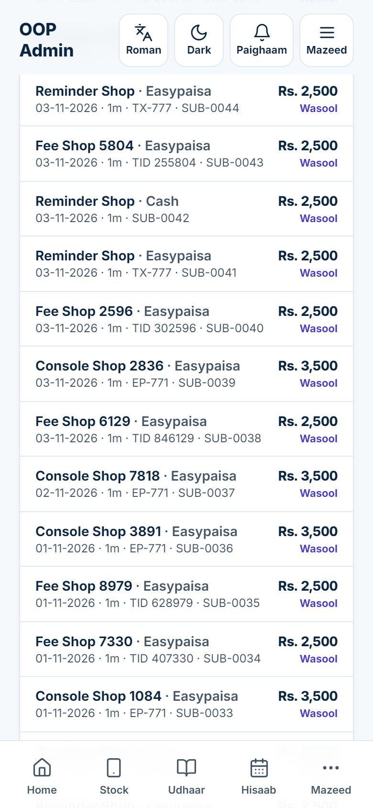
Renewal code (jise license key bhi kehte hain) aik lamba dastkhat shuda code hai jo aik dukaan ke plan mein mahine jorta hai. Maalik isay Mazeed → Software fees → Renewal code mein paste kar ke Code se renew karein dabata hai. Yeh website, Android app aur aik computer wale install par chalta hai, internet ke baghair, sirf aik baar, aur sirf usi dukaan ke liye jis ke liye banaya gaya. Keys zyada tar aik computer (offline) wali dukaanon ke liye chahiye hoti hain, jo server par aap ki manzoori nahi dekh saktin.
Dono tareeqon se har key Keys list mein rakhi jati hai.
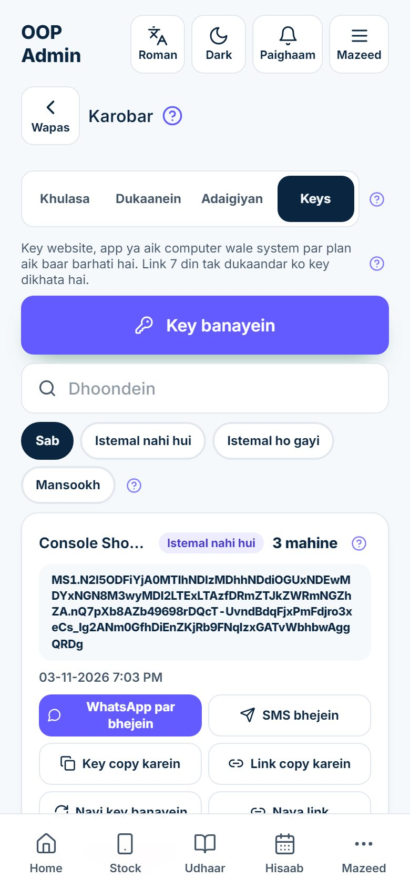
Har key card mein dukaan, haalat, mahine, poora code, kab bani, kitni baar aur kis zariye bheji gayi, us ka link kitni baar khula, aur aap ka note hota hai.
| Haalat | Matlab |
|---|---|
| Istemal nahi hui | Ban gayi, dukaan ka intezar hai |
| Istemal ho gayi | Dukaan ne is se renew kar liya, website / app par ya aik computer par |
| Mansookh | Aap ne mansookh ki, ya nayi key ne is ki jagah le li; ab yeh nahi chalti |
Istemal nahi hui wali key ke buttons:
| Button | Kya karta hai |
|---|---|
| WhatsApp par bhejein | Key aur us ke magic link ke sath WhatsApp kholta hai |
| SMS bhejein | Wahi paighaam aap ke phone ki SMS app mein kholta hai |
| Key copy karein | Paighaam copy karta hai, kisi bhi app mein paste karne ke liye |
| Link copy karein | Sirf magic link copy karta hai |
| Nayi key banayein | Utne hi mahinon ki nayi key banata hai aur yeh wali mansookh karta hai |
| Naya link | Is key ko 7 din ka taza link deta hai; purana link chalna band ho jata hai |
| Key mansookh karein | Poochta hai Ye key kyun mansookh kar rahe hain?, phir key ko band kar deta hai |
Istemal ho gayi wali key par sirf Nayi key banayein hota hai, jo utne hi mahinon ki taza key banata hai aur istemal shuda key ko waise hi rehne deta hai.
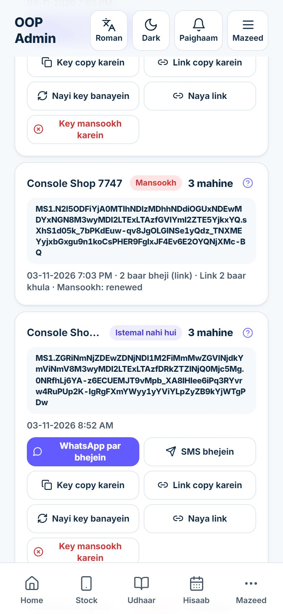
Key card se bheje gaye har paighaam mein aik magic link bhi hota hai. Dukaandar isay kisi login ke baghair kholta hai aur Aap ki renewal key dekhta hai: us ki dukaan, mahine, key, Key copy karein button aur tareeqa "App kholein → Mazeed → Software fees → Renewal code → key paste karein → Renew." Link 7 din chalta hai, aur har dafa khulna key card par gina jata hai, taake aap ko pata ho ke us ne dekha ya nahi.
| Masla | Kya karein |
|---|---|
| Dukaandar se paighaam gum ho gaya | WhatsApp par bhejein dobara dabayein. Key wahi hai; card par 2 baar bheji likha aata hai. |
| Link ki miyad khatam ho gayi | WhatsApp par bhejein dobara dabayein: 7 din ka taza link khud ban jata hai |
| Aap ko lagta hai link kisi aur ke paas hai | Naya link: purana link foran band ho jata hai; phir naya bhejein |
| Key ghalat number par chali gayi | Wajah ke sath Key mansookh karein, phir nayi banayein |
| Aap ne ghalat mahine daal diye | Key mansookh karein, phir sahi mahinon ke sath Key banayein |
| Key aik offline computer par istemal ho chuki thi aur phir aap ne mansookh ki | Jo mahine jur chuke woh rehte hain; mansookhi se pehle offline istemal hui key wapas nahi li ja sakti |
Aik computer wale install mein paste ki gayi pehli sahi key us install ko aap ke record mein us ki dukaan se jor deti hai. Us ke baad us par sirf usi dukaan ki keys chalti hain. Jab dukaan ke computer par internet hota hai to woh aap ke server se rabta karta hai, is liye us ka aakhri istemal aur app ka version karobar console mein nazar aata hai. Is rabte ke liye dukaan ke computer par aik setting (SAAS_URL) chahiye, jo install karte waqt Operations runbook ke mutabiq lagti hai.
Super admin page se dark button Karobar: fees, dukaanein, keys ke zariye karobar console kholein. Page, Karobar, mein chaar tabs hain: Khulasa, Dukaanein, Adaigiyan aur Keys. Har raqam aap ki qabool ki hui adaigiyon aur set kiye hue plans se nikalti hai; haath se kuch nahi likha jata.
| Tile | Kya dikhata hai |
|---|---|
| Mahana aamdani (MRR) | Paid package (basic, pro, chain) wali un sab dukaanon ki mahana fees jin ka plan khatam nahi hua. Trial, khatam aur band dukaanein nahi gini jatin. Misaal: Rs. 1,500 wali 3 dukaanein aur chauthi band: Rs. 4,500. |
| Fi dukaan ausat | MRR ko paid package wali dukaanon ki ginti (sath likhi hai) se taqseem. Khatam aur band dukaanein us ginti mein hain, is liye ausat ko neeche le aati hain. |
| Is mahine wasool | Aap ki qabool ki hui fees, adaigi ke din ke hisaab se, is mahine ki 1 tareekh se; neeche Pichla mahina |
| Kul wasool | Shuru se ab tak qabool ki hui sab fees; Dukaanein = kitni alag dukaanon ne kabhi adaigi ki |
| Pending (check karein) | Batayi hui adaigiyan jo aap ne abhi qabool ya mustarad nahi kin; daba kar Adaigiyan kholein |
| 7 din mein aani hai | Un dukaanon ki mahana fees jin ka plan agle 7 din mein khatam hota hai: jinhein abhi yaad dilana hai |
| 30 din mein aani hai | Yahi agle 30 din ke liye, 7 din wali samet |
| Tareekh guzar gayi | Un dukaanon ki mahana fees jin ki aakhri tareekh guzar chuki (riayati ya band): woh paisa jo aap ko mil jana chahiye tha |
| Abhi istemal mein | Pichle 10 minute mein istemal hui online dukaanein aur pichle ghante mein rabta karne wale aik computer wale install; neeche Aaj istemal hua aur Is hafte istemal hua |
| License keys | Bani hui magar abhi istemal na hui keys; neeche Istemal ho gayin aur Mansookh; daba kar Keys kholein |
Aur neeche: Mahina waar wasooli (pichle 12 mahinon ka har mahine aik bar), Kis zariye se (har Kis zariye ada kiya lafz ki qabool shuda fees, maslan "Easypaisa 12 · Rs. 30,000"), Package ke hisaab se (har package ki dukaanein aur mahana aamdani) aur Kaun istemal kar raha hai (online aur offline dukaanein, aur har plan ki haalat mein dukaanon ki ginti).
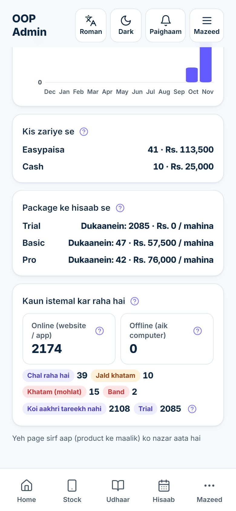
Console mein har jagah istemal honay wali plan ki haalatein:
| Haalat | Matlab |
|---|---|
| Chal raha hai | 7 din se zyada baqi |
| Jald khatam | 7 din ya kam baqi |
| Khatam (mohlat) | Khatam, magar abhi riayati dinon mein chal raha hai |
| Band | Riayati din khatam: sirf dekhna, adaigi aur backup |
| Koi aakhri tareekh nahi | Unlimited |
| Trial | Trial package par |
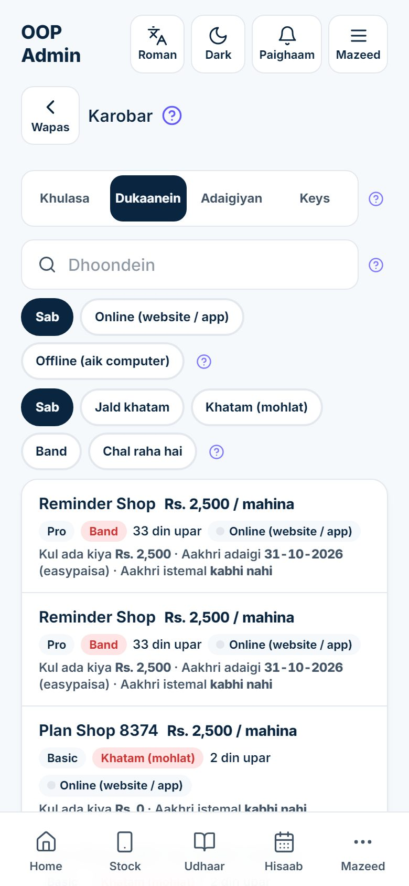
Dukaanein tab har customer ki list deta hai, band aur khatam hone wali dukaanein pehle. Har line mein mahana fees, package, haalat aur baqi ya guzre din, Online (website / app) ya Offline (aik computer) (hara nuqta matlab abhi istemal mein), Kul ada kiya, Aakhri adaigi aur us ka zariya, koi Pending raqam aur Aakhri istemal hota hai.
Search naam se dukaan dhoondta hai. Buttons ki pehli line is se filter karti hai ke dukaan kahan chalti hai; doosri (Sab, Jald khatam, Khatam (mohlat), Band, Chal raha hai) plan ki haalat se.
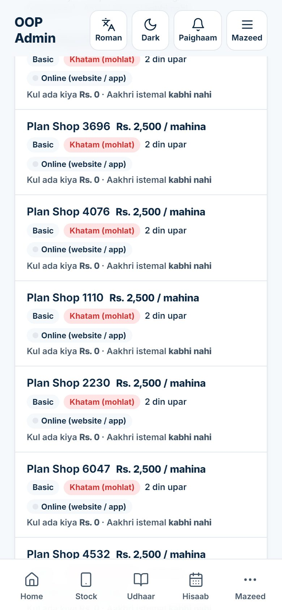
Dukaanein tab mein koi dukaan dabayein. Us ki sheet khulti hai.
| Hissa | Kya dikhata ya karta hai |
|---|---|
| Fees | Mahana fees, neeche package |
| Plan ki haalat | Baqi din, ya guzre din, haalat ki chip ke sath; ∞ matlab koi aakhri tareekh nahi |
| Kul ada kiya | Is dukaan ki sab qabool shuda fees; × wala number kitni adaigiyan |
| Aakhri istemal | Is dukaan mein kisi ne aakhri baar app kab istemal ki (aik computer wale install ke liye, aakhri rabta kab hua) |
| Version | Sirf aik computer wale install ke liye: us computer ka bataya hua app version, taake pata chale update chahiye ya nahi |
| Kahan chalta hai | Online (website / app) ya Offline (aik computer) dabayein. Kisi dukaan par Windows version install karne ke baad isay khud set karein. |
| WhatsApp par yaad dilayein | Tayyar yaad dehani ke sath WhatsApp kholta hai: dukaan ka plan, kab khatam hota hai ya khatam ho gaya, fees, aur "Adaigi ke liye Mazeed → Software fees" |
| Dukaanon ki fehrist mein kholein | Super admin page par is dukaan ki sheet par le jata hai, plan badalne, adaigi lene ya password rakhne ke liye |
| Adaigiyan | Is dukaan ki har batayi ya aap ki darj ki hui fees, zariye, tareekh, mahine, raseed aur haalat ke sath |
| License keys | Is dukaan ki keys, Key banayein ke sath |
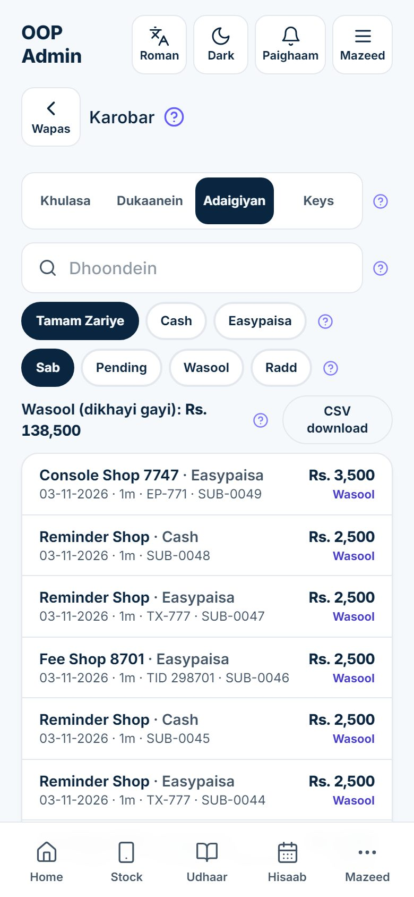
Adaigiyan tab har dukaan ki har fees ki list deta hai, nayi sab se upar: dukaan, zariya, adaigi ki tareekh, mahine ("1m"), hawala, raseed number, raqam aur haalat (Pending, Wasool ya Radd).
Keys tab ki wazahat chapter 6 mein hai.
Login screen par koi bhi Password bhool gaye? daba kar apna mobile number likh sakta hai. Dukaan ke maalik ki request aap ke paas aati hai, WhatsApp par aur Super admin page par Password ki requests ke neeche. Staff member ki request us ki apni dukaan ke maalik ke paas jati hai (jo Mazeed → Staff mein reset karta hai); yeh aap ki list mein bhi us ke role ke sath nazar aati hai, agar maalik madad maange.
Har password request mein banday ka poora naam aur dukaan, us ka number aur tareekh hoti hai, aur neeche wali line mein Password rakhein aur aik tick (chapter 3 mein aik nazar aati hai).
Purana password foran chalna band ho jata hai aur request khud band ho jati hai. Is ki bajaye owner ka staff member se maalik par badal deta hai. Jab koi maalik app istemal kiye baghair aap ko call kare to Customers ki dukaanein se us ki dukaan kholein aur qadam 3 se shuru karein.
Request line par tick usay kuch badle baghair mukammal mark karta hai, maslan jab banday ko password yaad aa gaya.
Jab maalik kahe "aik sale gum hai" ya "mera khata ghalat lag raha hai", to aap us ki dukaan apni aankhon se dekh sakte hain.
Ab app us ki dukaan aise dikhati hai jaise aap us ke andar hon: us ki home screen, stock, khata aur sales. Aap ka aana us dukaan ke activity log mein likha jata hai, is liye maalik hamesha dekh sakta hai ke aap aaye the. Wapas jaane ke liye Mazeed → Super admin dabayein.
Dukaan tab band hoti hai jab us ke riayati din khatam ho jayein aur koi adaigi qabool na hui ho. Usay poori screen ka notice nazar aata hai. Woh phir bhi login kar ke sab kuch dekh sakti hai, Mazeed → Software fees se aap ko adaigi kar sakti hai, aur Mera data backup karein se apni sab lists download kar sakti hai. Renew hone tak woh na bech sakti hai, na khareed sakti hai, na kuch badal sakti hai. Kabhi kuch delete nahi hota; jis din renew ho, sab kuch bilkul pehle ki tarah dobara chalne lagta hai.
Dukaan kholne ke liye Customers ki dukaanein mein us ki sheet par in mein se aik kaam karein:
| Soorat | Kya karein |
|---|---|
| Us ne adaigi ki aur bataya | Software fees card mein qabool karein |
| Us ne aap ko cash diya ya aap ne transfer dekha | Adaigi darj karein |
| Woh kuch din mein dene ka wada karta hai aur aap ko bharosa hai | Is dukaan ke riayati din barhayein, maslan 15, aur Mehfooz karein |
| Aik computer wali dukaan jahan internet nahi | Adaigi darj karein, phir Renewal code bhejein |
| Aap ki apni ya kisi dost ki dukaan | Unlimited |
Save karte hi dukaan khul jati hai; maalik ko sirf app refresh karni hoti hai.
Agar koi dukaan bas adaigi band kar de to aap ko kuch nahi karna: woh khud yaad dehaniyon, riayati dinon aur band hone se guzarti hai. Agar maalik mahinon baad wapas aaye to us ki adaigi darj karein aur woh apne purane stock aur khate ke sath kaam jari rakhta hai.
Super admin page par Android app card mein Android phones ke liye dukaan ki app ka download link hai. Link aap ki website ka address aur us ke baad /app.apk hai, maslan https://mobileshop.oopsolutions.com/app.apk. Yeh hamesha naya tareen version deta hai, is liye yahi link har dukaan ke liye chalta hai, aaj bhi aur har update ke baad bhi.
Nayi dukaan kholte waqt jo login paighaam aap bhejte hain (chapter 3) us mein yeh link pehle se hota hai.
| Kab | Kya karein | Kahan |
|---|---|---|
| Har roz | Har intezar karti adaigi ("N check karni hain") apne wallet ya bank app se milayein; qabool ya mustarad karein | Super admin → Software fees card |
| Har roz | Website se dukaan ki requests aur Password ki requests ka jawab dein | Super admin page, upar |
| Har roz | Haath se mile har cash ya transfer ke liye Adaigi darj karein | Dukaan ki sheet |
| Har hafte | Har Jald khatam dukaan ko WhatsApp par yaad dilayein; Khatam (mohlat) aur Band dukaanon ko call karein | Karobar → Dukaanein |
| Har hafte | Aakhri istemal kabhi nahi wali dukaanon ko, aur jin ki keys abhi Istemal nahi hui, unhein call karein | Karobar → Dukaanein aur Keys |
| Har mahine | Is mahine wasool ko apni statements se milayein; accountant ke liye wasool adaigiyon ka CSV download | Karobar → Khulasa aur Adaigiyan |
| Har mahine | Koi aakhri tareekh nahi wali jo dukaanein adaigi karni chahiyein un ki Adaigi is tareekh tak set karein; purane Version wale aik computer installs ke update ka plan banayein | Super admin list; Karobar → Dukaanein |
| Jab badle | Naya bank account, wallet, support number ya yaad dehani ka waqt | Billing settings, Adaigi ke accounts |
Us ki adaigi aap ka intezar kar rahi hai. Software fees card mein us ki adaigi dhoondein aur Wasool dabayein. Agar us ne cash diya ya aap ko report nahi milti to us ki sheet mein Adaigi darj karein istemal karein. Agar woh aik computer wale install par hai to adaigi darj kar ke usay Renewal code bhejein.
Raseed aur history rehti hai, kyunke paison ka record kabhi delete nahi hota. Dukaan ki sheet kholein aur Adaigi is tareekh tak wapas sahi tareekh par karein, phir Plan save karein. Jo hua woh Note (sirf aap dekhte hain) mein likh dein.
Us ki sheet kholein, pro dabayein, Mahana fees (Rs) badlein, aur Plan save karein dabayein. Agar Is dukaan ke modules ke neeche Plan ke mutabiq par tick hai to naye hisse khud on ho jate hain.
Dukaan trial par hai aur us ki koi aakhri tareekh nahi, is liye usay kabhi yaad dehani nahi aayegi aur woh kabhi band nahi hogi. Agar trial khatam hona chahiye to Adaigi is tareekh tak set karein.
Agar woh abhi Istemal nahi hui to wajah ke sath Key mansookh karein dabayein aur nayi banayein. Agar woh Istemal ho gayi to is ki jagah dukaan ki sheet par Adaigi is tareekh tak theek karein.
Aik computer wala install aap ko sirf tab report karta hai jab us computer par internet ho aur us ki rabte wali setting lagi ho. Dukaan par internet check karein, aur jis ne install kiya us se Operations runbook wali setting check karwayein. Dono soorton mein dukaan ka kaam mutasir nahi hota.
Haan, magar sirf server ke zariye: un ka mobile number super-admin list mein shamil kiya jata hai, jaisa Operations runbook mein likha hai. Yeh sirf unhein dein jin par aap har dukaan ke data aur apni aamdani ke figures ke maamle mein bharosa karte hain.